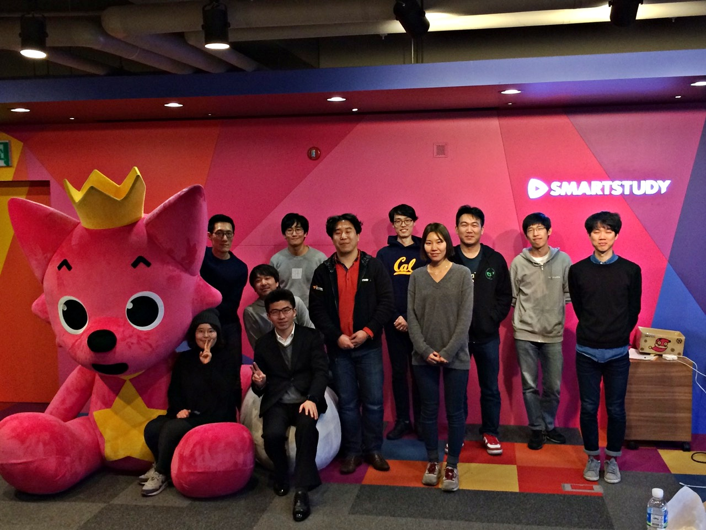

ConfConf?
- 내용 : 컨퍼런스 경험을 나누는 컨퍼런스
- 일시 : 2016년 2월 20일(토) 오후 2시 30분 ~ 오후 6시
- 방식 : 캐주얼 토크(모든 참가자가 발표를 해야 함)
발단
컨퍼런스나 세미나에 다녀온 분들을 모아서 캐주얼 토크를 해보면 어떨까요?
재밌겠어요!
그렇게 준비팀이 되었다. 평소에 대답할 때 주의를 기울이지 않으면...
이름
'행사 이름을 뭐라고 할까요?'라는 질문에 아무 생각 없이 반사적으로 ConfConf라는 단어가 떠올랐다. 아마도 마침 PyPy에 대해 생각하고 있었기 때문이 아닐까...
그렇게 성의 없는 제목이 결정되었다. 역시 말을 조심해야...
발표자 섭외
발표자를 섭외할 때 중요하게 생각했던 점은 다양성이었다. 개인적으로는 개발과는 거리가 먼 주제의 컨퍼런스에 가서도 배울 점들이 많았기 때문이기도 하고, 주변에 죄다 개발자들 뿐이니 개발 관련 컨퍼런스에 다녀온 분들은 찾기 쉬울 테니... 라는 마음도 있었다. (나중에 보니 찾기 쉽지는 않더라.)
그래서 프랑크푸르트 국제 도서전에 다녀오신 정보라 기자님과 1인 출판사를 운영하며 지방 서점들을 방문하신 김민희 님께 요청을 드렸는데 흔쾌히 승낙해주셨다.
장소 섭외
발표자들께는 워낙 미리부터(2015년 10월부터 한두 사람씩) 연락을 드렸기 때문에 일정을 맞추기가 어렵지 않았는데, 장소는 고민이 많았다.
문제는 고민만 많고 딱히 대안이 없었다는 것.
참석 인원이 적고, 등록비를 따로 받지도 않았기 때문에 진행 예산이 전혀 없었다는 것도 살짝 장벽이었고.
요구사항을 정리해보니 대략 다음과 같았는데...
- 십여 명이 약간 넉넉하게 앉아야 함
- 무선 인터넷
- 프로젝터+스크린
- 전원+멀티탭
- 발표에 집중할 수 있는 분위기
- 저렴한 대여료
대여료는 준비팀(이라고 해봤자 두 명 뿐이었지만)이 어찌어찌 해결한다손 치더라도, 다른 부분은 포기할 수가 없었다. 그러다 마침 리모델링이 끝난 스마트스터디의 놀이터(=개방형 회의실)가 물망에 올랐다.
그런데 특정 회사의 회의실을 사용할 때는 또다른 면을 고려해야 했다.
- 회사의 허락
- 업무 공간에 피해를 주면 안 됨
- 음식물 섭취가 제한됨(바닥 청소 문제)
스마트스터디로써도 외부 행사를 처음 고려하는 상황이었기 때문에, 서로 조심스럽게 접근했고 결과는 양쪽 모두가 만족(했다고 생각하는데 회사의 입장이 어떨지는 아직 안 물어봤...)
이 자리를 빌어 스마트스터디의 윙님, 개굴님, 매생이님, 족장님께 고마운 마음을 전한다. :)
홈페이지
행사 안내와 결과물 정리(영상과 발표 자료)를 위해서라도 홈페이지가 필요했는데, nacyot님이 만드셨다.
지도위에 행사가 열린 도시를 표시했는데, 더 재미있는 요소를 넣을까 싶다가 마땅한 아이디어가 없어서 포기. 귀찮아서
어떤 홈페이지를 스크롤하다가 지도가 나타나면 스크롤이 되지 않고 지도가 확대되어서 불편하다는 점을 nacyot님이 누누이 지적했던 적이 있는데, ConfConf 홈페이지에서는 이걸 살짝 해결해주셨다. (지도 위에 투명 레이어를 하나 씌워서, 스크롤 이벤트를 지도 쪽으로 보내지 않는다. 그러다가 투명 레이어를 클릭하면 레이어를 삭제하고 스크롤 이벤트를 지도에 보내는 방식)
내 발표 준비
역시 마감이 닥쳐야... 효율이 오른다. 그렇지만 15분이라는 발표 제한 시간에 맞추는 연습은 하지 못한 상태로 행사일을 맞이했다.
행사일
회사 입구에 안내문이라도 붙여보려고 살짝 일찍 왔는데, 마침 1층 레스토랑(아이모나디아)에서 결혼식이 있어서 로비에 화환이 즐비했다. 우리 행사를 축하해주는 거라고 생각하기로... (=언감생심)
토요일이었지만 출근해서 나를 놀래켰지만 사진사로 전락하신 썬님. 고맙습니다. (근데 사진 좀 더 찍을 걸 그랬어요 ㅋㅋ)
발표
발표자 겸 참석자들이 시작 시간을 잘 지키셔서 굉장히 놀랐고, 발표 내내 분위기도 좋았다. 열 명이 사용하기엔 공간이 너무 넓어서 집중력이 떨어지지 않을까 걱정했는데, 오히려 쾌적하다는 느낌만.
발표들이 하나같이 다 좋았지만 그 중에서도 개인적으로 의미가 있는 발표는 장승훈 님의 Mozilla Festival 2015 참석기(발표 자료). 개발자들이 모여서 기술 이야기만 하지는 않는 모습이 신기했다. 아마 내 최근의 관심사가 민주적인 조직 운영 혹은 민주주의 자체에 가있다 보니 더 그랬던 듯.
모질라라는 단체에 대해 인식이 더 좋아졌고, 인터넷 공간의 공공성에 대해서도 더 고민하면서 관련 글들을 찾아 보았다. (유용빈 님이 추천해주신 요차이 벤클러 교수님 관련 기사)
발표하신 모든 분께: 귀한 경험을 나눠주셔서 고맙습니다!

눈 감은 분이 많지만 사진이 이것 밖에 없... 죄송해요 다들 ㅠㅠ
아쉬움
시간 관리
시간을 잘 잘라내지 못한 점은 아쉽다. 전체 일정이 좀 일찍 끝났다면 잠깐이나마 뒷풀이에 참여할 수 있었을 텐데... ㅡㅜ 좀더 인정머리가 없어야 하려나. -_-;; (놀이터에 마이크 설비가 있었다면 시간 종료와 함께 마이크 소리를 줄이는 방법을 쓸 수 있었으려나?)
뒷풀이
뒷풀이에 못 갔다. 아쉽다. 뒷풀이에 못 갔다. 아쉽다. 뒷풀이에 못 갔다. 아쉽다. ㅠㅠ
이상한 비밀
회사에서 nacyot님과 바로 옆자리다 보니 행사 관련 이야기도 간혹 하게 되었는데, '지금 무슨 얘기 하냐'고 물어보는 동료에게 뭐라 설명하기가 어려웠다. 일반 참석자는 부를 수가 없고, 발표자로 부르기엔 이미 발표자가 많고... 딱히 비밀 이야기도 아닌데 소근소근하게 되었던 이상함.
마이크 배터리
장시간 잘 버텨준 마이크 배터리가 마지막 발표가 시작하고 6분이 지난 후 죽어버렸다. 스카리님께 죄송한 마음 뿐. ㅠㅠ
만족도
그렇게 행사가 끝났지만, 다들 뭘 기대하고 이 모임에 왔었는지, 기대를 충족하고 돌아갔는지 궁금해서 설문지를 보냈다. 한 분 빼고 답을 주셨는데 다행히 모두 좋았다는 평. 게다가 모두가 내년에도 한다면 오겠다고, 심지어 준비팀으로 자원봉사하겠다는 의견도 많았다.
관련 링크
캐주얼 토크에는 발표자들만 참석할 수 있지만, 그렇다고 해서 발표 내용까지 감춰두는 건 아니다. 스마트스터디에서 캠코더를 지원해주신 덕에 모든 발표를 고화질 영상으로 남길 수 있었으니, 내용이 궁금한 분들은 아래 링크를 클릭!
발표 전체 목록
- 지방 서점 여행기 : 영상, 발표자료
- The Plan B Barcamp : 영상, 발표자료
- Ruby Kaigi 2015 : 영상, 발표자료
- Act Festival : 영상, 발표자료
- GitHub Universe 2015 : 영상, 발표자료
- Mozilla Festival 2015 : 영상, 발표자료
- YAPC::Asia Tokyo 2015 : 영상, 발표자료
- Frankfurt Book Fair 2015 : 영상, 발표자료
- AWS re:invent 2015 : 영상
- PyCon 2015 : 영상, 발표자료
사족
내 발표 말미에 특정 정당에 가입하지 않고 다른 정당에 가입한 이유를 설명하려다 얼버무리고 넘어가는 부분이 나온다. 가입하지 않은 특정 정당을 싫어해서가 아니라 대세를 의도적으로 거부하는 내 성향이 작용한 탓이라고 설명하고 싶었는데, 남은 시간이 없어서 말이 막 꼬였다. (그런데... 요즘 같은 시국에 이렇게 대놓고 특정 정당에 가입했다는 말을 해도 되는 걸까)